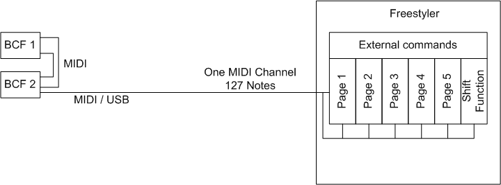
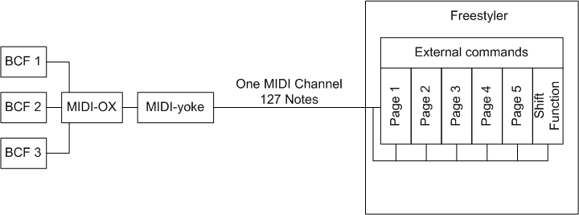
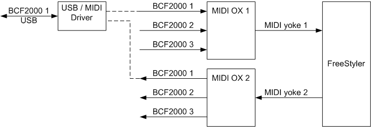
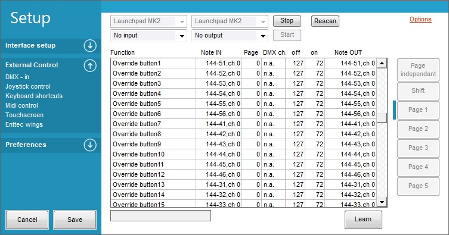
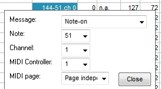
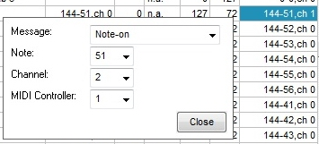
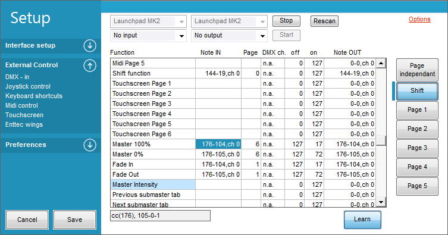
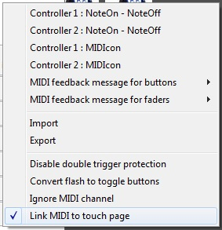
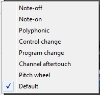

Table of Contents
Midi Interface
In the MIDI example bellow BCF2000 has been used but it should still give a idea of how to use the MIDI interface.
What is MIDI
MIDI stands for Musical Instrument Digital Interface.
As the name implies “Musical Instrument” was created for and originally used for playing music.
However, it is often used in other ways, including controlling other interfaces attached to a computer - such as DMX lighting.
Due to this, some terms that are used do not correspond perfectly between music MIDI and MIDI when used with DMX.
Below will help clarify some terms that are related to music and how they can be compared a bit with DMX:
| DMX Protocol | Max Value | Midi Protocol | Max value |
|---|---|---|---|
| Universe | 1 | channel | 16 |
| Channel | 512 | Note | 127 + 0 |
| Value | 255 + 0 | Velocity | 127 + 0 |
In DMX there are universes, in midi these are channels and there are 16 of them available. FreeStyler don’t detect the channel but treat them as one and therefore is it only possible to use 127 + 0 notes in total on the midi interface.
Note and Channel in DMX are alike though in DMX 512 are available, while in midi only 128 (127 + 0) are available.
The value that in DMX are send to a channel are in midi named velocity.
Midi Controller
As MIDI controllers go, anything that can generate a midi signal can be used. Controllers comes in many shapes some with faders, some just with buttons, you can even use a standard midi keyboards that is used for playing music. It just need to be able to generate a midi signal with the correct type of note's.
For FreeStyler the midi commands is default “Note-on” bud this can be changed to other in the Note setup menu.
In many cases more than one controller are wanted and though it is midi interface the cable connection can be something else.
In the example bellow BCF2000 has a midi and a usb cable interface.
So if the PC has a midi interface if will be obviously to use that one.
Alternative the BCF can be interconnected with Midi cables and connected to the PC with usb.

The situation where only usb are to be used as cable connection is a bit more tricky.
It could be if more controllers from various manufactures are to be used together.
In this case the midi signals from the different controllers are connected via an usb hub to the PC and must be merged together with a small program.
This can be done with a program like MIDI-OX. The midi connection is then done by the Midi yoke which makes a virtual (s.w.) connection between Midi-ox and Freestyler.
The Midi-ox and Midi-yoke is s.w. and this requires some extra resources from the PC and it can slow down the response time on external controls.
As alternative software Bome’s midi translator can be used along with others. A google search will be useful to find options.
In general most software that can manipulate midi signals can be used.

{kind=link}
{kind=link}
Midi-ox setup
To use the Midi-ox two sockets are needed. One for input and one for output.
When Midi-ox are installed it automatically appears in the Midi Input and output selection box in the “Midi control” window.

More Midi Ox setup See. Midi Ox Setup
{kind=link}
Midi and FreeStyler
As mentioned above FreeStyler can handle 127 + 0 note’s. In total there are more than 500 External Commands that can be mapped to the midi note’s.
To gain as much flex ability as possible in the control, these 127 note’s can be mapped to 5 + shift pages. The pages selection is also controlled by the Midi interface.
This means that one button is assigned to select page1 and an other to Page2. By pressing these two buttons the mapping page will change and thereby the functionality of the BCF.
It could be that on page 1 the faders are mapped to sub master intensity and on page 2 the same faders are mapped to gobo control.
The fader and button can this way have multiple functionality.
In total this give a possibility of mapping 768 External commands (127+0) x (5 Pages + Shift Page).
BCF2000
To get an overview over the BCF2000 used above, here is listed with the controls available.
Encoder section
8 x Encoders
8 x build-in buttons
Buttons between encoders and faders
2 x 8 Buttons
Fader Section
8 faders
Button section
4 buttons
Note additional 10 button can be made with the “Preset <”, “Preset >”, Edit, Exit, Store, Learn, Encoder group 1, 2, 3, 4. But this require a special setup with the Behringer bc-manager.
Additional Foot switch can be connected
This gives in basic 44 notes and with the 4 encoder group selection 92 notes. And this is without the 10 additional buttons mentioned above.
So with 3 BCFs it is easy to use all notes and it require a bit of planning to optimize it.
Using BCf2000
How to Setup
Start FreeStyler
Select menu - Open “Setup”→”Freestyler Setup”
FreeStyler can handle two midi controllers simultaneously. They are to be setup individually like the steps bellow

{kind=link}
- Expand External Controls, select Midi Control
- Select Midi Input device
- Select Midi Output device - Optional: used for device feedback (LEDs, Motorized Faders, etc.)
- Click the Start button the midi device
- Click the Learn button
- Scroll down and find the function you would like to assign a MIDI function to.
- Click in the “Note IN” section of the function.
- Using your MIDI controller, push the button or turn the knob that you want to control the selected function.
- Freestyler should be listening for the note and you should see it appear next to the save button.
- Select eventually Page mapping. Here all functions are mapped to Page 2
- Continue assigning MIDI functions to buttons or knobs as you wish.
- Once finished, click “SAVE”.
Note Edit:
Note IN and Note OUT can be edit by clicking on the fields.


Page
The Page mapping is used to give a note (control) multiple functions.
“Page independent” means that the function mapped to this note will always be the same no matter what the page settings are. It could be functions like “Master intensity” and “Toggle blackout” which is functions that are nice to have available no matter what page is selected.
In all the other page settings the note and the mapped function is only available on the selected page.
Example could be a button that has note 10 with page 1 selected it is “Open Gobo” with page 2 it is “Open Color”, with page 3 selected it is “Open Pan/Tilt and so on.
NOTE: If you configure buttons to set the MIDI page number (or next/previous MIDI page). These should be page independent, or you might not be able to change pages.
Alternatively way if you just wanted to use 2 pages, you could use one page button that in page 1 changes to page 2, and then in page 2 it changes to page 1.
Shift Function
You can configure FreeStyler to use one button on a controller as a shift button, so that when it is held down and another button is pressed, you can respond as if it were a different button.
E.g. you might have a button on your controller mapped to “Fade IN”, but when you hold the shift button and press it, the same button is mapped to “Master 100%”.
Any button on the controller can be configured as the shift function (in this screenshot it's button with MIDI note 19).

Then in order to program FreeStyler to respond to shift + button, you set the page to 6 (see screenshot).
You have to click the “Shift” button on the right side of the assignments and then only press your button on the controller normally (don't press the button programmed as shift or it will get reassigned).
Then when you're finished, change the button in FreeStyler from “Shift” back to Page xx unless you want to program more Shift buttons.
{kind=link}
{kind=link}
{kind=link}
Note monitor
In the bottom of the window are a small monitor of the input notes.
In the screenshots above, the first shown is CC(Control changed, 176) and note 105 with data 0 via channel 1
CC(176), 105-0-1
Option

NoteOn – NoteOff
It is possible to change the default “key down” and “key up” midi command in FreeStyler.
This is due to difference in midi protocol for different controller.
Key Down is default NOTE + VALUE 127 or alternated NOTE ON 127
Key Up is default NOTE + VALUE 0 or alternated NOTE OFF 127
MIDIcon.
This is for the Elation MIDIcon and are to be checked on if the MIDIcon are used. This is checked automatically when a MIDIicon is configured in FreeStyler.
The reason for this option is that the feedback of the MIDIcon is slightly different from other midi controllers.
MIDI feedback for buttons and faders
It is possible to change the midi commands for the midi feedback to alternative commands.
This is set individually for buttons and faders.
{kind=link}

Import and Export
This are used to save the midi mapping in a “.fms” file that then can be imported again on the same or an other PC.
Disable double trigger protection
This option is related to the MIDIcon controller.
The faders of the MIDIcon tend to stick between two values triggering value -1 and value +1, therefor FreeStyler will only change the value when it detects a +2 or -2 difference.
Convert flash to toggle buttons
Some of the external command works as flash buttons which means that they have the ON value as long as they are pressed and the OFF value as long as they are not pressed.
With “Convert flash to toggle buttons” this is converted to a toggle which means that the command have the same value until the pressed next time.
Ignore MIDI channel
Some controllers have their own pageing system using midi pages (16 pages), you can disable this behaviour in FreeStyler by enabling this option.
This will allow you to use midi buttons with the same function on every page.
Link MIDI to touch page.
When a touch screen is used in combination with a MIDI control then this function makes it possible to link the page control.
When the MIDI “Page 1” button is pressed then the touch screen shifts to touch page 1.
This can be helpful when buttons are placed on the touch and the related fade are to be mechanical MIDI.
If the link is disabled then the user has to press MIDI page1 and then Touch page 2. This requires that the user always keep the two page control synchronized. If the link is enabled then the PC keeps track on which MIDI page is active and activate the related touch page.
Supported Devices
Any MIDI device should work with FreeStyler since FS supports the common MIDI interface.
Some users tend to find that some devices work better with FS than others. Listed below is a list of MIDI devices commonly used by users to control FreeStyler.
{kind=link}
- Behringer BCR-2000 (Same as BCF2000 but has only rotary control, no faders)
- Behringer FCB-1010
- Akai APC20 & APC40 (change to Abelton mode via Sysex to get button color feedback)
- Akai MPD-16
- Korg Nano Range
- Novation LaunchControl XL
- Hercules DJ COnsole
- Touch OSC (Midi App for tablets - design your very own layout!)